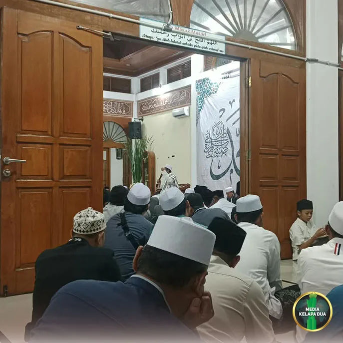

Berita Utama

RW 08 Kelapa Dua Wakili Puskesmas Kebon Jeruk Lomba Kampung Bebas Jentik Tingkat Kota Jakarta Barat
Tanggal, 20 Oktober 2026
MediaKada | RW 08 Kelurahan Kelapa Dua ditunjuk untuk mewakili Puskesmas Kecamatan Kebon Jeruk dalam ajang Lomba Kampung Bebas Jentik (KBJ) Tingkat Kota Administrasi Jakarta Barat. Kegiatan tersebut diselenggarakan oleh Suku Dinas Kesehatan Kota Administrasi Jakarta Barat di Ruang Soewiryo, Lantai 16 Blok B, Kantor Wali Kota Administrasi Jakarta Barat, pada Selasa (20/10) pagi.
Lomba Kampung Bebas Jentik (KBJ) merupakan salah satu upaya untuk mendorong penerapan Perilaku Hidup Bersih dan Sehat (PHBS) di masyarakat dalam pengendalian vektor penyakit dengue, yaitu nyamuk Aedes aegypti. Kegiatan ini melengkapi berbagai program yang telah berjalan, seperti Gerakan 1 Rumah 1 Jumantik, Pemberantasan Sarang Nyamuk (PSN) 3M Plus, larvasidasi, dan fogging fokus.
Penunjukan RW 08 Kelurahan Kelapa Dua sebagai perwakilan Puskesmas Kecamatan Kebon Jeruk didasarkan pada keberhasilannya mempertahankan status nol kasus (zero case) Demam Berdarah Dengue (DBD) secara berturut-turut. Keberhasilan tersebut tidak terlepas dari peran aktif para kader Jumantik, dukungan pengurus wilayah, serta partisipasi masyarakat dalam menjaga kebersihan lingkungan.
Dalam lomba tersebut, RW 08 mempresentasikan inovasi Gerakan Lawan Nyamuk dan Jentik (Gelantik) RW 08 Kelapa Dua sebagai solusi untuk mengatasi berbagai tantangan dalam pemberantasan sarang nyamuk. Program ini mencakup pembiayaan pendamping Jumantik oleh pengurus wilayah, patroli jentik melalui kegiatan monitoring PSN 3M Plus yang dilakukan secara terpadu oleh pengurus wilayah, kader Jumantik, dan koordinator wilayah Puskesmas ke sekolah-sekolah yang berada dilingkungan RW 08 Kelapa Dua
Selain itu, terdapat program Polisi Jentik yang berperan membantu monitoring PSN sekaligus memberikan edukasi kepada warga yang masih ditemukan jentik di lingkungan rumahnya. Sebagai bentuk tindak lanjut, dilakukan pula pemasangan stiker merah pada lokasi yang masih ditemukan jentik nyamuk.
Inovasi lainnya yang turut dipaparkan adalah aplikasi Self Jumantik RW 08, yang memungkinkan warga melakukan Pemberantasan Sarang Nyamuk (PSN) secara mandiri dan melaporkan hasil kegiatannya melalui aplikasi. Inovasi ini bertujuan meningkatkan partisipasi masyarakat sekaligus mengoptimalkan pelaporan kegiatan PSN 3M Plus di tengah keterbatasan jumlah kader Jumantik.
Turut mendampingi kegiatan Lomba Kampung Bebas Jentik tersebut antara lain Lurah Kelapa Dua Elfin Ridho Putra, Kepala Puskesmas Kecamatan Kebon Jeruk, dr. Linda Lidya M.Epid beserta jajaran, Kepala Puskesmas Pembantu Kelurahan Kelapa Dua drg. Cindy Styaningsih dan jajaran, Kasi Kesejahteraan Rakyat Kelurahan Kelapa Dua, Ketua RW 08 Kelapa Dua Bisri Ali, para kader Jumantik, serta Polisi Jentik RW 08 Kelapa Dua.
Melalui berbagai inovasi dan kolaborasi yang melibatkan seluruh unsur masyarakat, RW 08 Kelurahan Kelapa Dua berharap dapat menjadi contoh wilayah yang berhasil menciptakan lingkungan sehat, bebas jentik, dan bebas kasus Demam Berdarah Dengue (DBD) di wilayah Jakarta Barat.